Gullbergsvass
Two linked studio projects in Gullbergsvass, Gothenburg. The first designs housing around courtyards and a public waterfront. The second looks beyond the site to design the streets that would connect it to the rest of the city.
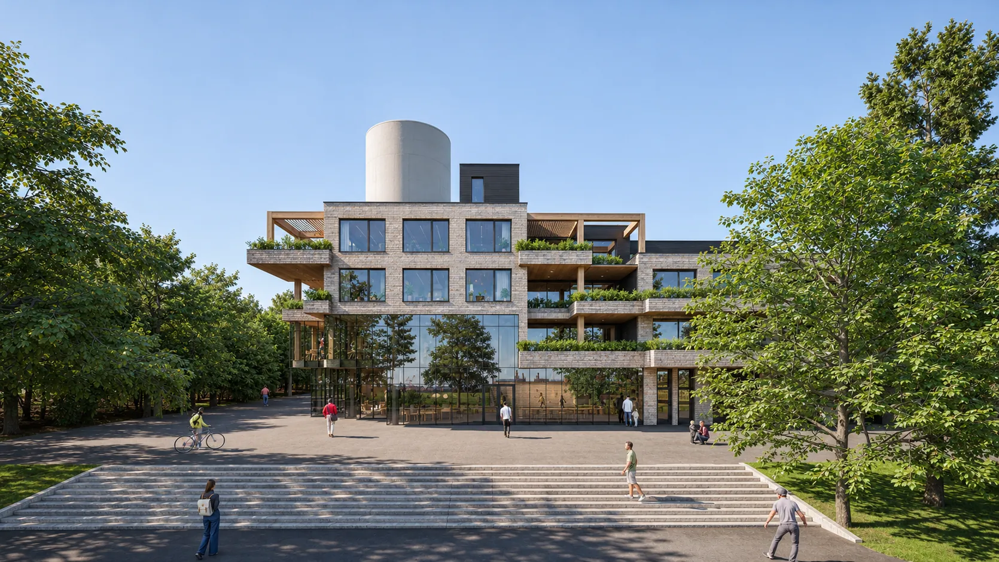
Part 01
Housing
Urban principles
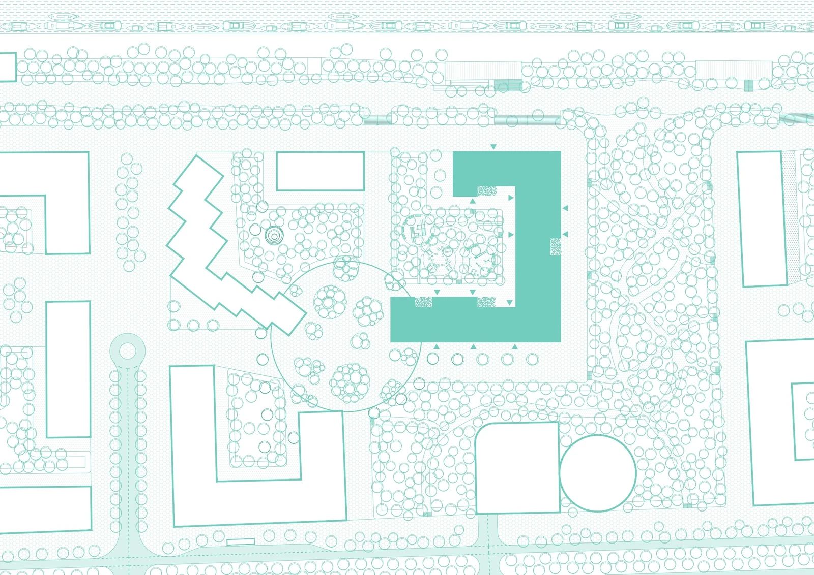
Water management
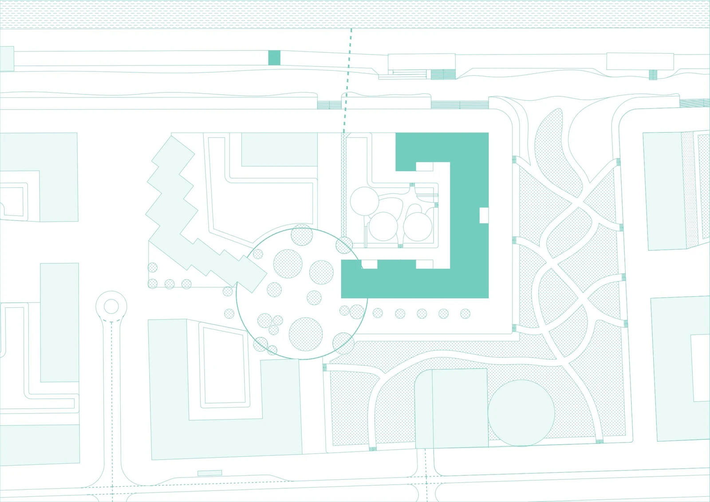
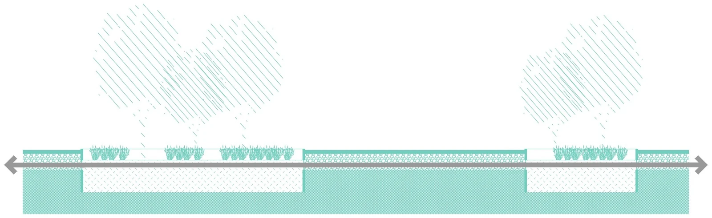
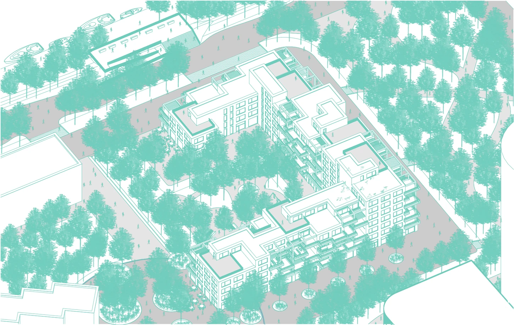
Floorplans
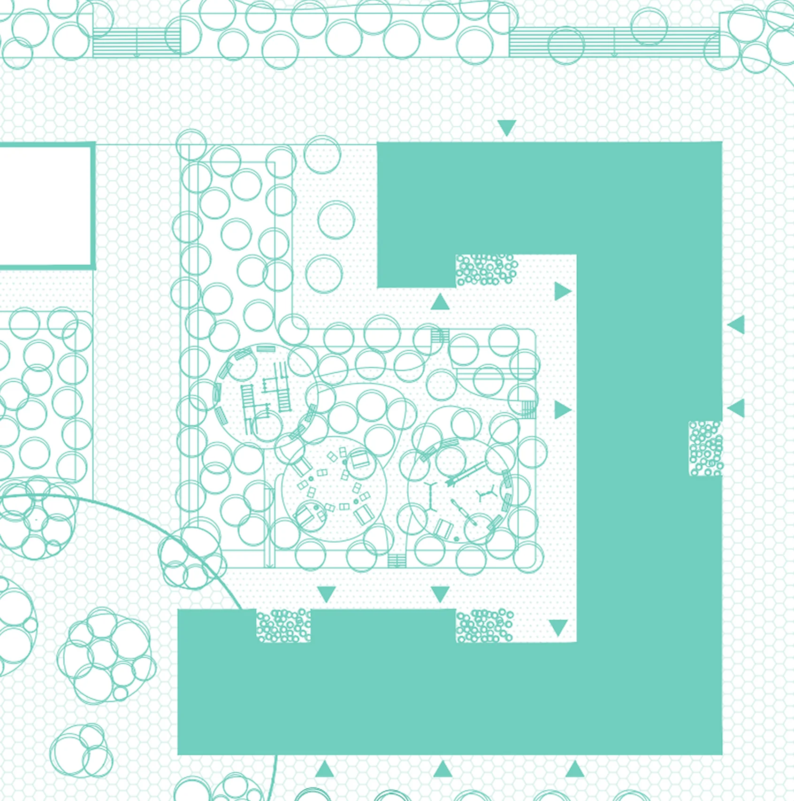
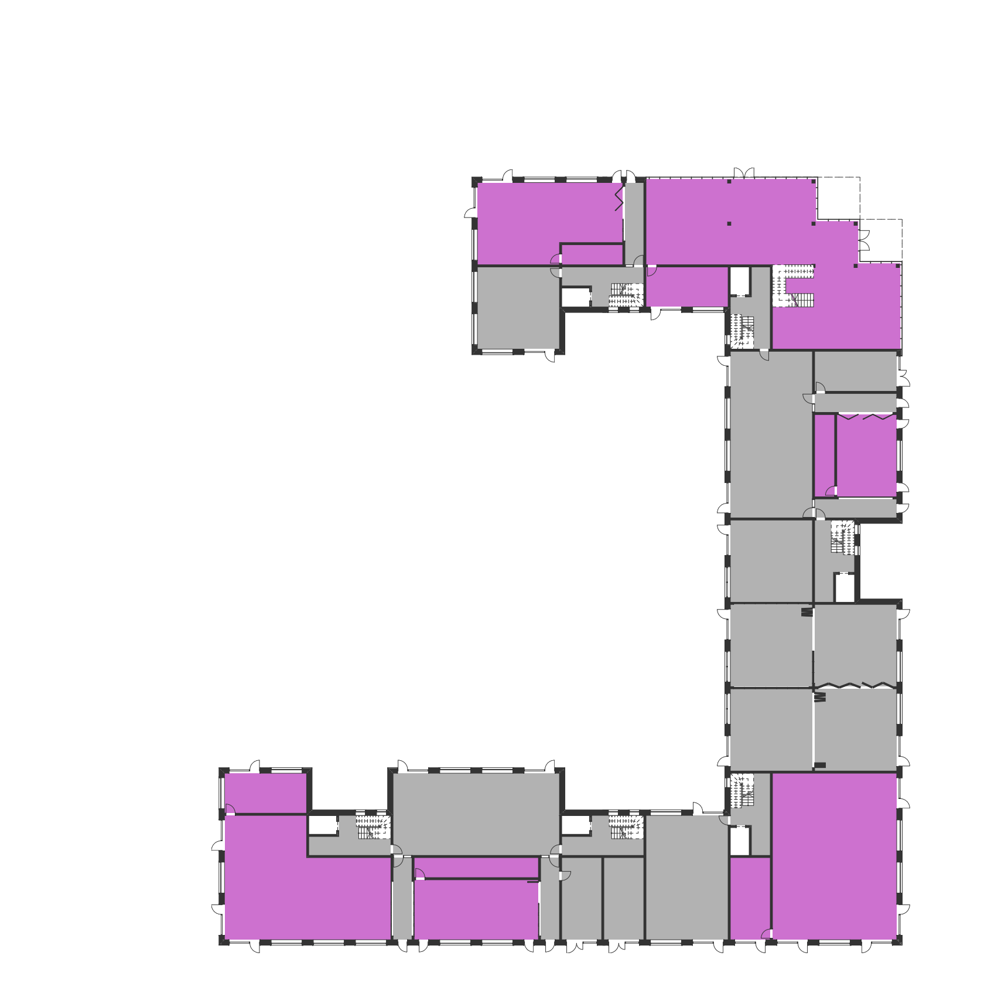
Apartment plans
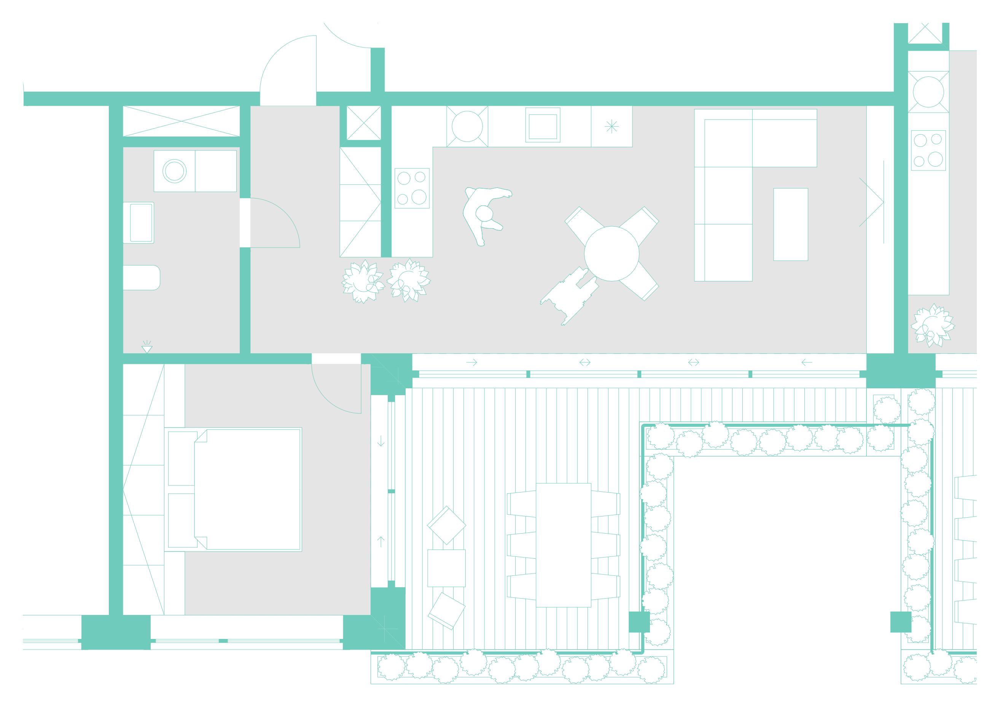
Construction detail
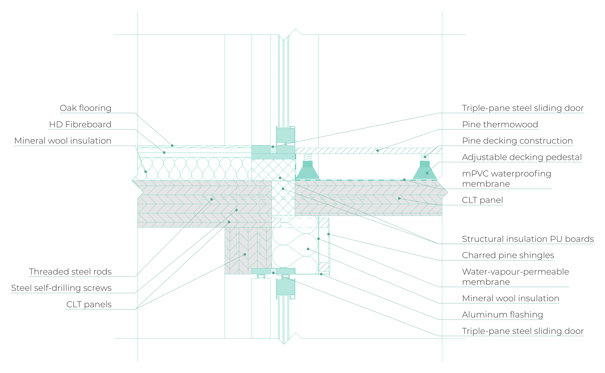
Part 02
Street design
A proposed street network for Gullbergsvass, studied through movement at two scales and translated into street categories, frontages and building form.
Street network
A proposed non-motorised network for Gullbergsvass. The drawings compare the new connections with existing streets, the city’s green-and-blue concept and the orthophoto.
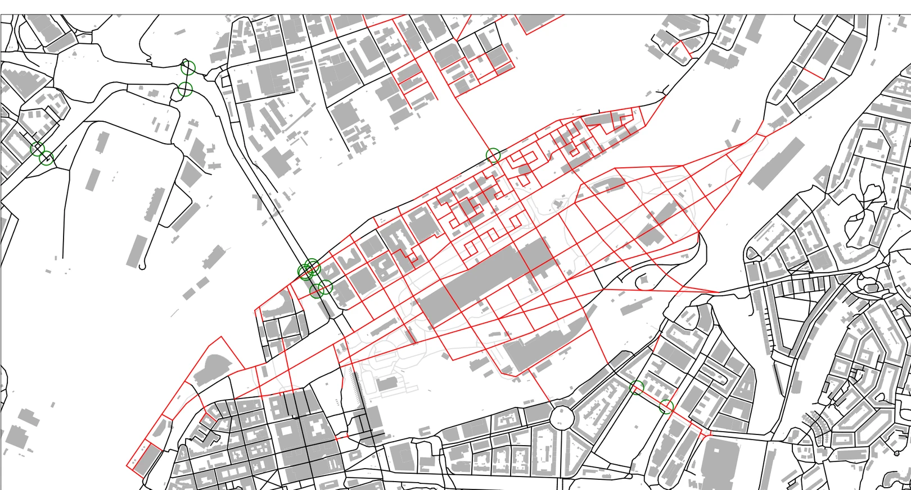
Movement at two scales
Angular betweenness measures how often a street lies on routes through the network. The 5 km city-scale analysis and the 2 km neighbourhood analysis are read together to define the street categories.
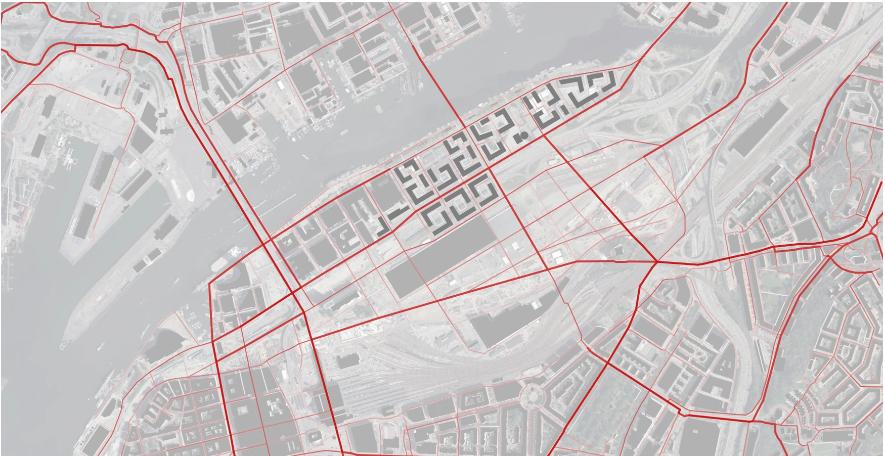
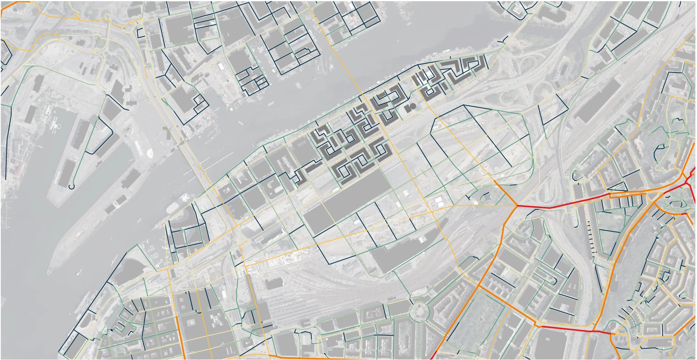
Street hierarchy
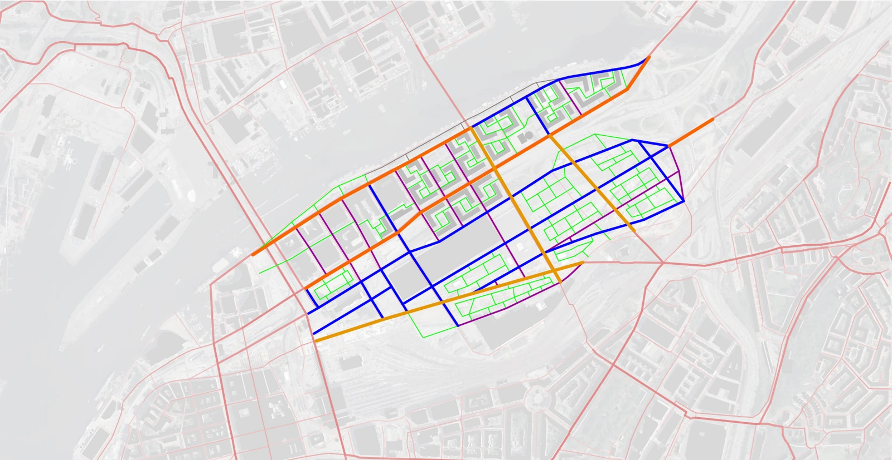
Select a coloured route or use the street-type buttons.
Frontages and building form
Block proposal
The street hierarchy is applied to a block: commercial frontages face the busier streets, with housing and shared spaces towards the inner network.
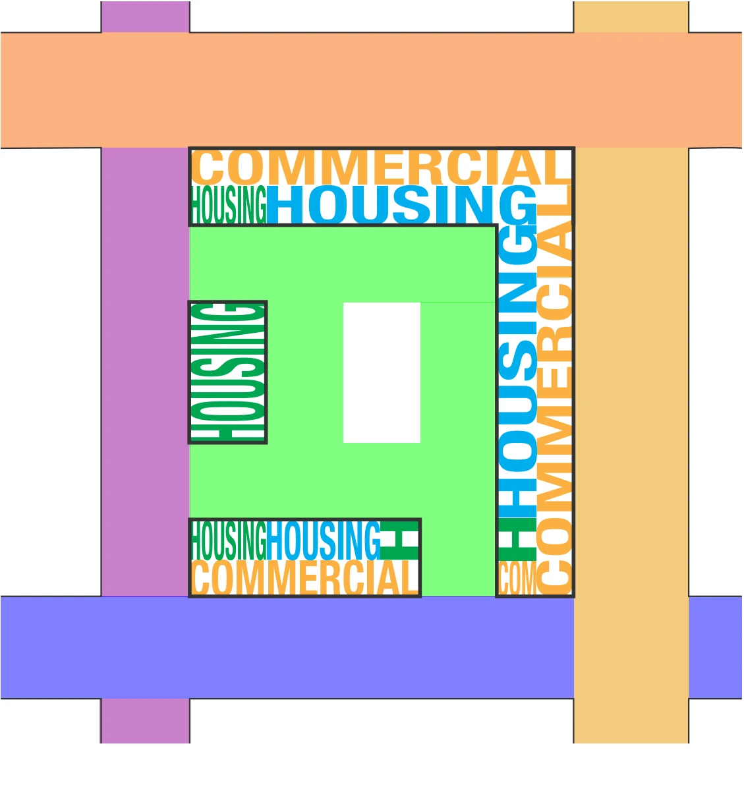
Select a street edge to follow its role in the block.